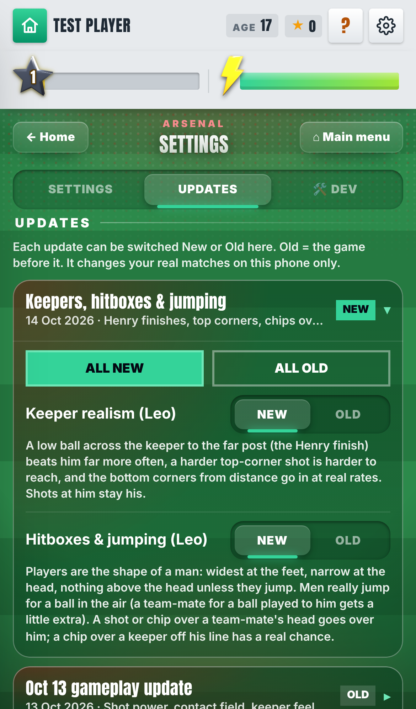
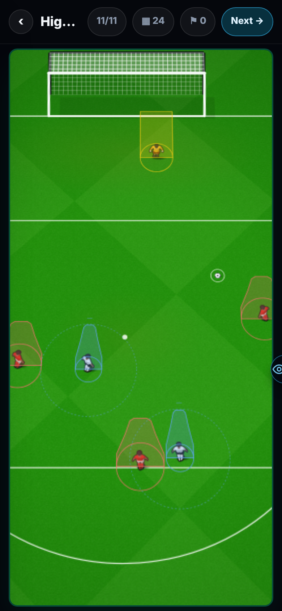
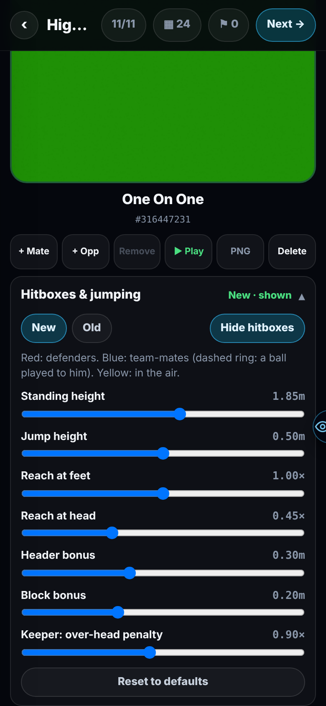
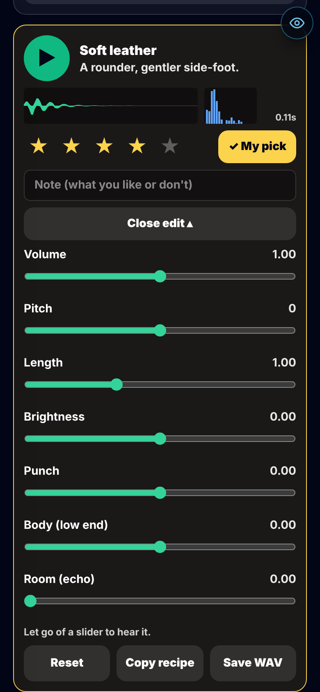
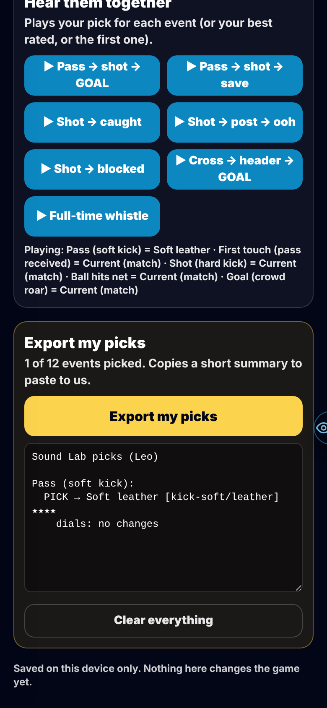

Every New | Old switch now sits in Settings → Updates. Keepers stop saving everything near them. Players have the shape of a man and really jump. A sound lab to pick the match sounds.
1 · SETTINGS → UPDATES
One tab in the game for every update. Open an update, press All new or All old, or flip one row. No more going to a test page to change a setting. It only changes the game on your own phone.

Settings → Updates. Newest update on top, with its two new switches.
2 · THE HENRY FINISH GOES IN
A low shot curled across the keeper into the far bottom corner now beats him far more often. He dives across his body more slowly and can't stretch as far. Shots straight at him are still his.
With the Oct 13 update on, the keeper saved this shot about 3 in 4 times. Now he saves about 1 in 2.
3 · TOP CORNERS: THE HARDER, THE BETTER
A shot into a top corner is harder to reach the harder you hit it. A near-post top corner from close in is harder too.
4 · PLAYERS ARE THE SHAPE OF A MAN
Before, every player touched the ball like a tall box: as wide at the head as at the feet. Now he reaches wide with his feet and narrow at his head, and nothing above his head touches him unless he jumps.
5 · CHIPS GO OVER HEADS
A chip or a lofted shot over a team-mate's head now goes over him, instead of him stopping it. A chip over a keeper who has come off his line has a real chance. Straight over a defender's head still needs about 2 m, because he steps into it.
6 · JUMPS ARE REAL
A team-mate now jumps for a cross played to him, and the jump lifts his reach. He gets a little extra reach for a header aimed at him, and a defender gets a little extra for a block. Crosses, headers and blocks did not get worse.
7 · SEE AND TUNE THE HITBOXES
Infinite Highlights and Infinite Match now have a "Hitboxes & jumping" panel. Show the outlines, flip New | Old, and move 7 sliders: height, jump, reach, header extra, block extra and more. Reset puts them back.

Red: defenders. Blue: team-mates. Yellow: the keeper.

The panel with its sliders.
8 · SOUND LAB
A test page with 12 match sounds: pass, shot, first touch, keeper save, catch, post, net, block, header, whistle, goal roar and the "ooh". Each has 6–8 options plus the sound the game plays today. Play each one, star it, pick one, write a note, and change it with 7 sliders. "Export my picks" gives a short list to send us. Nothing here changes the game yet.

One option open: play, stars, My pick, the 7 sliders.

Play sounds in a row, then Export my picks.
Where: Admin menu → Sound Lab (/star-sound-lab-dev).
KNOWN ISSUES
Headers score a little less
More headers are won, but the keeper saves more of the high ones: 43.8% → 41.9% scored.
Not played in a full match
Keeper, hitboxes and jumps are measured on the real engine over thousands of shots. Nobody has played a career match with them yet.
The sounds were not heard
The build machine has no speakers. Every sound plays and none clips, but nobody listened.
3D match view
It doesn't show the jumps or the outlines yet.
Six tests fail on main too
Two keeper tests, a 3D minigame and three chance tests. They failed before this round, the same way.
YOUR CALLS
Henry finish: it now goes in about 1 in 2 with the Oct 13 update on. Real ones go in more often. Go further?
Full-power top corner: now saved about 1 in 10. Too easy?
Chip straight over a defender: still needs about 2 m. Lower?
Outlines: drawn at true height (taller than the drawn players), or scaled to the drawings?
Sounds: header, first touch and block have no sound of their own today. Give them one? If the made-up crowd sounds are poor, use recorded crowds? Picks go straight into the game, or as a test first?
The numbers, if you want them
Keeper, saved % (keeper rated 80, Oct 13 update on, before → now; real Premier League in brackets):
Henry finish, tight-angle chances: 84 → 56 (13)
Henry finish, one-on-ones: 72 → 29 (13)
Top corner, medium power: 71 → 48 (38)
Top corner, full power: 37 → 10 (38)
Near-post top corner, close: 35 → 25 (44)
Bottom corner from 18–24 m: 95 → 85 (66)
Central low and shots at him: unchanged (95, 96)
Hitboxes (Old → New):
Lofted shot over a team-mate, he stops it: 74% → 32%
Chip over a team-mate to the man behind, first man stops it: 100% → 41%
Chip from 3 m past a defender's side clears at: 2.36 m → 1.60 m
Chip over a keeper 3 m off his line clears at: 3.30 m → 2.92 m
Byline crosses reach their man: 85% → 89%; crosses onto a head: 91% → 93%
Old on either switch is today's game exactly (checked over 264 keeper shots and 1,200 crosses, shots and passes).
Previous versions
Leo v0.15 — 12 Oct 2026 — the gameplay round. Keeper pro, shots, knuckleball and power shot, ball physics, match flow, the match radar, dribble duels, a tournament test page. All as New | Old switches, Old by default.